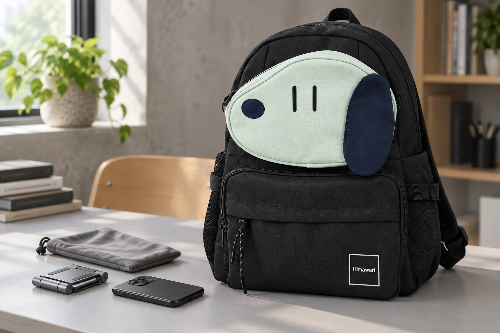

접이식 휴대폰 거치대, 펼친 채 백팩에 넣지 않도록

공용 책상에서 휴대폰으로 자료를 보다가 자리를 옮깁니다. 휴대전화는 챙겼는데 펼쳐둔 거치대는 그대로 가방에 밀어 넣기 쉽습니다. 거치대를 접는 동작까지 마쳐야 오늘의 책상 소품 정리도 끝납니다.
휴대전화를 먼저 분리합니다
기기에 케이블이 연결되어 있다면 먼저 분리하고 휴대전화를 내려놓으세요. 거치대와 휴대전화를 한꺼번에 잡아 가방으로 옮기기보다 각각 담을 상태로 준비합니다. 거치대가 충전 기능을 가진 제품인지, 단순한 받침인지에 따라 처리할 부품이 다르므로 본인이 사용하는 제품의 안내를 확인합니다.
접힌 모양에서 튀어나오는 부분을 봅니다
힌지를 움직이는 순서와 끝까지 접어도 되는 범위는 거치대마다 다릅니다. 뻑뻑한 부분을 억지로 누르지 말고 제조사가 안내한 방식으로 접으세요. 접은 뒤 휴대전화를 받치는 턱이나 옆으로 나온 나사가 남아 있는지 살펴봅니다. 책상에서 작게 보이던 물건도 접는 방향에 따라 가방 안에서 차지하는 모양이 달라집니다.
받침 패드와 수납 파우치를 함께 확인합니다
거치대의 고무 패드에 먼지나 이물질이 붙어 있다면 해당 제품의 관리 방법을 따르세요. 분리된 패드나 빠진 부품이 있는 상태를 파우치로 가려두지는 않습니다. 파우치를 쓴다면 접힌 거치대를 자연스럽게 넣고 닫을 수 있는지 확인합니다. 맨몸의 휴대전화와 금속 거치대가 가방 안에서 바로 맞닿지 않도록 자리를 나누는 방법도 생각해보세요.
No.0423의 얼굴 포켓과 소품은 별개입니다
사진의 No.0423 네이비는 검정 바탕에 민트색 얼굴 포켓과 네이비색 코·귀 배색이 있는 실제 제품입니다. 카탈로그 외부 크기는 가로 32 × 세로 42 × 폭 13cm입니다. 거치대는 제품에 포함된 기능이나 구성품이 아니며, 얼굴 포켓이 특정 거치대의 전용 수납칸이라는 뜻도 아닙니다. 필요한 파우치의 접힌 두께와 가방 입구를 직접 비교한 뒤 담아보세요.
참고·안내
- Himawari No.0423 제품 정보
- 실제 Himawari No.0423 네이비 원본을 참조한 AI 연출 사진입니다. 휴대폰 거치대·휴대전화·파우치는 별도 소품입니다.
자주 묻는 질문
거치대를 접지 않고 빈 공간에 끼우면 안 되나요?
펴진 받침 부분이 다른 물건에 걸릴 수 있습니다. 사용하는 거치대의 운반 안내와 접는 방법을 먼저 확인하세요.
사진의 얼굴 포켓에 거치대가 들어가나요?
사진은 별도 소품을 가방 옆에 둔 연출이며 수납 시험이 아닙니다. 거치대와 파우치의 실제 치수를 확인해야 합니다.